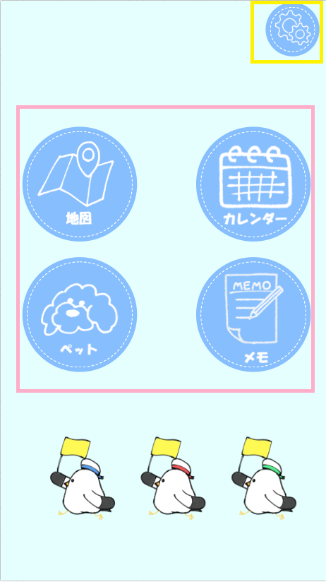
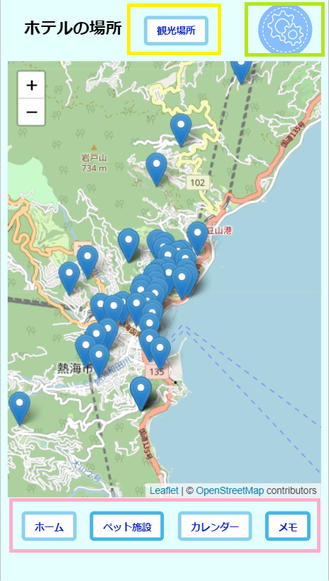
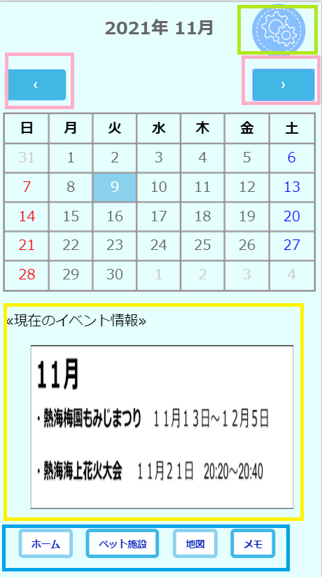
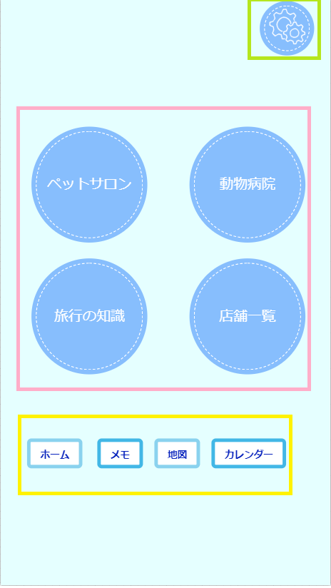
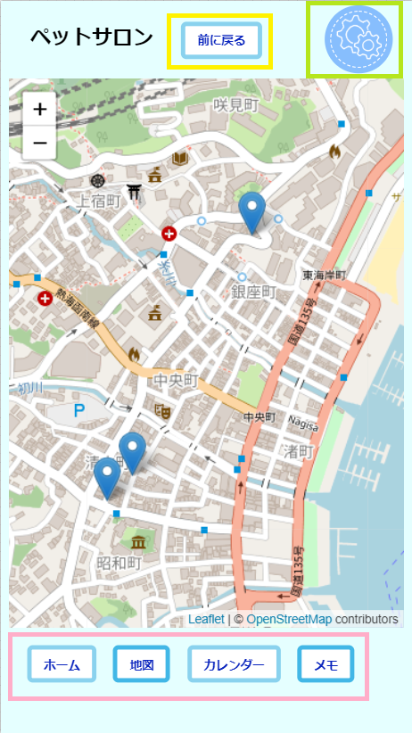
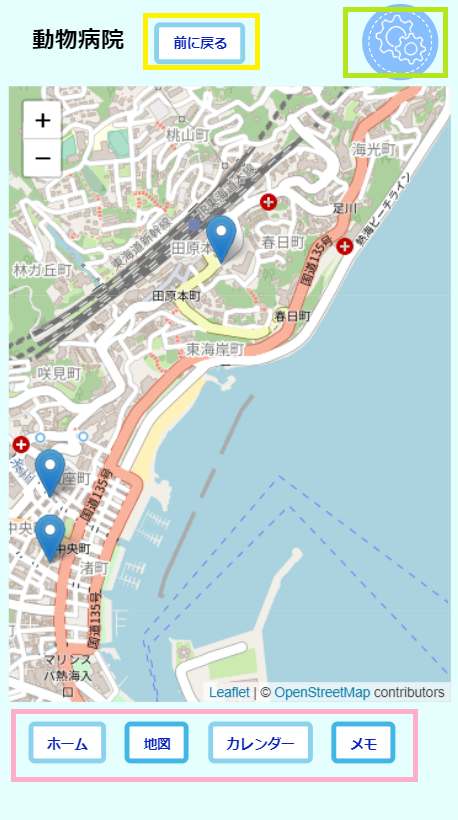
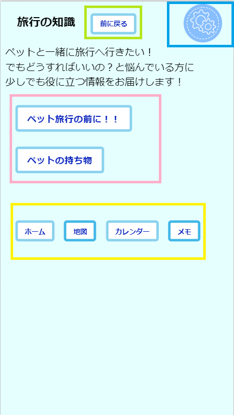
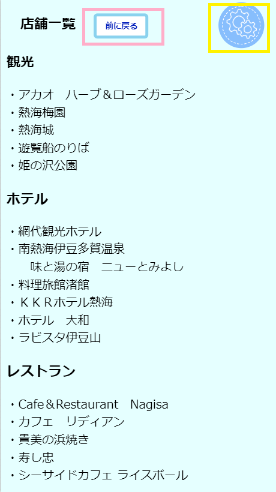
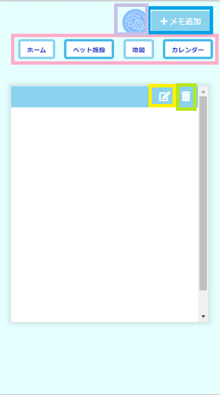

目次
- １ ホームについて
- ２ 地図について
- ３ カレンダーについて
- ４ ペットについて
- ５ メモについて
１ ホームについて

ここは、ホーム画面です。
４つの項目から自分が調べたい場所を選択してください。
≪メニュー≫
ピンクで囲まれたところがメニューです。
★地図
ホテルの場所と観光場所を知ることができます。
★カレンダー
カレンダー機能と今月のイベント情報を知ることができます。
★ペット
ペット旅行を考えている人向けの内容です。
ペット施設や旅行の知識などを知ることができます。
★メモ
メモすることができます。
≪設定≫
黄色で囲まれたところが設定です。
２ 地図について

ここは、ホテルの場所と観光場所を知ることができます。
≪画面移動≫
ピンクで囲まれたところがほかの画面に移動できます。
≪地図の切り替え≫
黄色で囲まれたところが地図の切り替えです。
観光場所の地図に切り替わります。
≪設定≫
黄緑で囲まれたところが設定です。
３ カレンダーについて

ここは、カレンダーとイベント情報を知ることができます。
≪月の切り替え≫
ピンクで囲まれたところが月の切り替えができます。
≪イベント情報≫
黄色で囲まれたところが今月のイベント情報です。
リアルタイムで載せてあります。
≪画面移動≫
青で囲まれたところがほかの画面に移動できます。
≪設定≫
黄緑で囲まれたところが設定です。
４ ペットについて

ここは、４つの項目からペット情報を知ることができます。
≪メニュー≫
ピンクで囲まれたところがメニューです。
★ペットサロン
ペットサロンの場所を知ることができます。
★動物病院
動物病院の場所を知ることができます。
★旅行の知識
ペット旅行の前に確認することなどの情報や
ペットの持ち物を知ることができます。
★店舗一覧
ペットと一緒に行ける場所を知ることができます。
≪画面移動≫
黄色で囲まれたところがほかの画面に移動できます。
≪設定≫
黄緑で囲まれたところが設定です。
目次
- １ ペットサロンについて
- ２ 動物病院について
- ３ 旅行の知識について
- ４ 店舗一覧について
１ ペットサロンについて

ここは、ペットサロンの場所を知ることができます。
≪メニュー≫
ピンクで囲まれたところがメニューです。
≪前に戻る≫
黄色で囲まれたところが前の画面
（ペットの4つの項目があるところ）に戻ります。
≪設定≫
黄緑で囲まれたところが設定です。
１ 動物病院について

ここは、動物病院の場所を知ることができます。
≪メニュー≫
ピンクで囲まれたところがメニューです。
≪前に戻る≫
黄色で囲まれたところが前の画面
（ペットの4つの項目があるところ）に戻ります。
≪設定≫
黄緑で囲まれたところが設定です。
１ 旅行の知識について

ここは、ペット旅行を考えている人向けに、
旅行の知識などを知ることができます。
≪気になる項目≫
ピンクで囲まれたところがペット旅行の知識や
情報を載せてあります。
≪メニュー≫
黄色で囲まれたところがメニューです。
≪前に戻る≫
黄緑で囲まれたところが前の画面
（ペットの4つの項目があるところ）に戻ります。
≪設定≫
青で囲まれたところが設定です。
１ 店舗一覧について

ここは、ペットと一緒に入れる店舗の場所を知ることができます。
≪前に戻る≫
ピンクで囲まれたところが前の画面
（ペットの4つの項目があるところ）に戻ります。
≪設定≫
黄色で囲まれたところが設定です。
５ メモについて

ここは、メモをすることができます。
≪書き込み・確定・修正≫
黄色で囲まれたところが、書き込み・確定・修正することができます。
・書き込み
メモに文章を書き込むときに使います。
・確定
書き込んだ文書を確定するときに、使います。
・修正
確定したメモを直したいときに、使います。
≪メモを消す≫
黄緑で囲まれたところがメモを削除することができます。
※削除したメモを戻すことはできません。
≪メモを作成≫
青で囲まれたところがメモを作成します。
初めてメモを使う場合は、「＋メモ追加」のところを押してください。
メモを複数枚作成したい場合は、
必要枚数分「＋メモ追加」を押してください。
≪メニュー≫
ピンクで囲まれたところがメニューです。
≪設定≫
紫で囲まれたところが設定です。